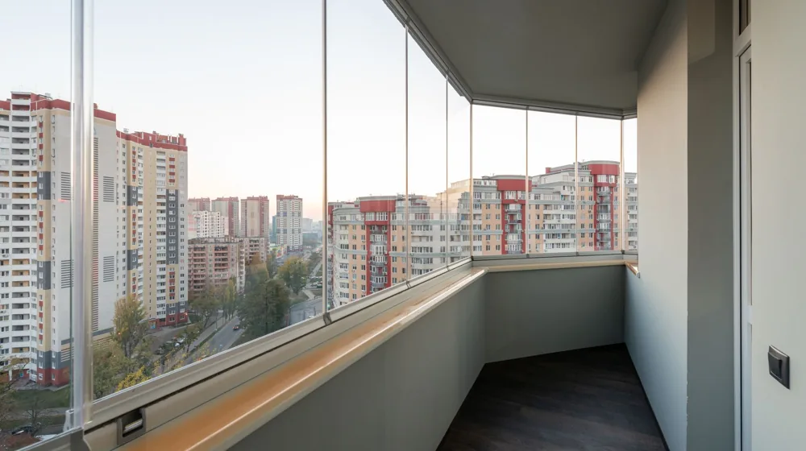

베란다 확장, 후회 없이 하려면? 이것부터 확인하세요!
사진: Ayşegül Aytören / Pexels (무료 이미지, 출처 표기)
베란다 확장 전 반드시 알아야 할 핵심 주의사항

베란다 확장을 계획하고 계신가요? 더 넓고 쾌적한 공간을 꿈꾸지만, 복잡한 인허가 절차나 시공 후 문제 때문에 망설이셨을 겁니다. 베란다 확장은 단순히 벽을 허는 작업이 아니라, 법적 문제, 단열, 안전까지 고려해야 할 점이 많습니다.
이 글에서는 베란다 확장 전 반드시 알아야 할 핵심 주의사항과 성공적인 확장을 위한 실질적인 가이드를 제공합니다. 안전하고 합법적인 확장을 통해 만족스러운 주거 공간을 만드는 데 도움이 될 것입니다.
합법적인 베란다 확장 조건은?
2005년 건축법 개정으로 주거 공간 확장을 위한 발코니 확장이 합법화되었습니다. 하지만 모든 베란다를 자유롭게 확장할 수 있는 것은 아닙니다. 특히 아파트 같은 공동주택의 경우, 주택법 및 건축법상 명확한 기준을 따라야 합니다.
가장 중요한 것은 '비내력벽' 여부입니다. 내력벽은 건물 하중을 지탱하는 벽으로, 절대 철거할 수 없습니다. 반면 비내력벽은 구조에 영향을 주지 않아 철거가 가능합니다. 확장을 계획하기 전에 관리사무소나 관할 구청 건축과에 문의하여 해당 벽이 비내력벽인지 반드시 확인해야 합니다.
또한, 발코니 확장을 하더라도 화재 등 비상 상황에 대비한 '대피공간'이나 '하향식 피난구' 설치 의무가 있습니다. 이를 준수하지 않으면 불법 개조로 간주될 수 있으니 주의해야 합니다. 정확한 사항은 해당 공동주택의 관리사무소 또는 관할 지자체 건축과에 문의하시길 권장합니다.
베란다 확장 시 고려해야 할 핵심 요소: 단열, 방수, 난방
확장된 공간을 사계절 내내 쾌적하게 사용하려면 단열, 방수, 난방 세 가지 요소를 꼼꼼히 고려해야 합니다. 이 부분에서 문제가 발생하면 결로, 곰팡이, 난방비 폭탄 등 예상치 못한 어려움을 겪을 수 있습니다.
단열은 창호 선택이 핵심입니다. 이중창 이상을 사용하고, 로이유리(Low-E Glass)처럼 단열 성능이 뛰어난 유리를 적용하는 것이 좋습니다. 또한 외벽과의 접합 부분에 틈새가 없도록 단열재를 충분히 보강하여 결로 현상을 방지해야 합니다.
방수는 누수 방지를 위해 필수입니다. 특히 우수관(빗물 배수관) 이설 시 전문가의 정확한 시공이 중요하며, 확장 부분의 바닥 방수 처리에도 신경 써야 합니다. 미흡한 방수는 아래층으로의 누수로 이어져 이웃 갈등의 원인이 될 수 있습니다.
난방은 기존 보일러의 용량과 확장 면적을 고려해야 합니다. 바닥 난방을 시공할 경우, 기존 난방 배관과 연결하거나 별도의 난방 방식을 고려할 수 있습니다. 난방 배관의 구배(경사) 및 기포 제거 작업이 부실하면 난방 효율이 크게 떨어질 수 있습니다.
확장 공사 진행 절차와 주의사항
베란다 확장 공사는 다음과 같은 절차로 진행됩니다. 각 단계마다 꼼꼼한 확인이 필요합니다.
- 법적 검토 및 허가 확인: 거주하고 있는 아파트 관리사무소나 관할 구청 건축과에 먼저 문의하여 해당 평형, 동의 베란다 확장이 가능한지, 어떤 서류가 필요한지 확인합니다. 불법적인 요소를 사전에 제거하는 것이 가장 중요합니다.
- 시공업체 선정 및 계약: 전문성과 경험이 풍부한 업체를 선정하는 것이 중요합니다. 최소 3곳 이상의 업체에서 견적을 받고, 시공 내용, 자재, 기간, A/S 조건을 명확히 계약서에 포함해야 합니다.
- 공사 진행 및 감독: 공사 시작 전 이웃 주민들에게 미리 양해를 구하고, 소음과 먼지 발생에 대한 대비책을 마련합니다. 공사 중에는 주요 단계마다 현장을 방문하여 시공 상태를 확인하는 것이 좋습니다.
- 공사 완료 및 최종 점검: 공사가 완료되면 계약 내용대로 시공되었는지, 단열, 방수, 난방 등 기능적인 문제가 없는지 꼼꼼히 점검합니다. 특히 창호의 밀폐성, 바닥 난방의 고른 분포 등을 확인해야 합니다.
가장 중요한 주의점은 불법 개조를 절대 피해야 한다는 것입니다. 만약 불법 개조가 적발될 경우, 원상복구 명령과 함께 이행강제금(건축법을 위반한 건축물에 대해 시정될 때까지 부과하는 벌금)이 부과될 수 있습니다. 안전과 재산상의 손실을 막기 위해 모든 절차를 합법적으로 진행해야 합니다.
베란다 확장, 후회 없는 선택을 위한 체크리스트
성공적인 베란다 확장을 위해 아래 체크리스트를 활용하여 준비 상황을 점검해 보세요.
베란다 확장은 한 번 시공하면 되돌리기 어려운 큰 공사입니다. 위 체크리스트를 바탕으로 철저히 준비한다면, 더 넓고 쾌적하며 안전한 주거 공간을 만들 수 있을 것입니다. 정확한 사항은 반드시 관련 기관이나 전문가와 상담하시길 권장합니다.
🔗 이 글도 함께 보면 좋아요: 달항아리 모던 인테리어, 흔한 실수 없이 연출하는 3가지 비법
관련 추천 상품
이 포스팅은 쿠팡 파트너스 활동의 일환으로, 이에 따른 일정액의 수수료를 제공받습니다.